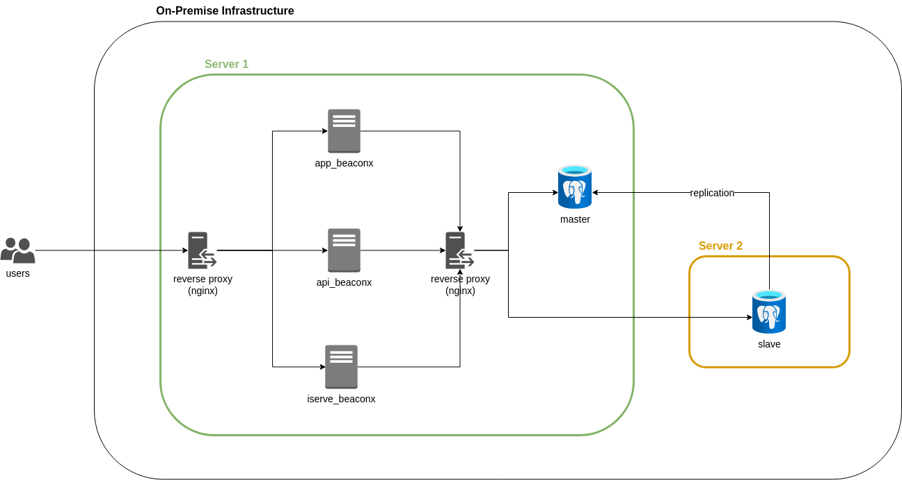

Tools that are being used for this setup:
Change the configuration of the Postgres cluster by tweaking these following files:
changing some options may require restart

In this setup, we are setting up two postgres cluster which serve as:
Initialize database with prerequisite data.
CREATE DATABASE einvoice;
CREATE ROLE admin_user WITH LOGIN PASSWORD 'securepassword';
CREATE ROLE beaconx_app WITH LOGIN PASSWORD 'securepassword';
GRANT ALL PRIVILEGES ON DATABASE einvoice TO admin_user;
GRANT ALL PRIVILEGES ON DATABASE einvoice TO beaconx_app;(optional) Seed database for demo purposes.
cd master
./seeder/default.sqlNo configuration needed as it will be managed by
repmgr.
The required configuration that need to be changed for master node:
postgresql.conf
shared_preload_libraries = 'repmgr'
wal_level = replica
archive_mode = on
archive_command = '/bin/true'
max_wal_senders = 10
max_replication_slots = 10
hot_standby = on
listen_addresses = '*'nginx was used to handle the routing of the stack.
Configure typical reverse proxy for Laravel application.
Below is nginx configuration set up to:
pg.conf
stream {
upstream postgres_backend {
server pg-0:5432 max_fails=3 fail_timeout=30s; # replace with actual ip address
server pg-1:5432 max_fails=3 fail_timeout=30s backup; # replace with actual ip address
hash $remote_addr consistent;
}
server {
listen 5432 so_keepalive=on;
proxy_pass postgres_backend;
}
}Setup database is Laravel application environment variables:
+ DB_CONNECTION: pgsql
+ DB_HOST: reverse-proxy
+ DB_PORT: 5432
+ DB_USERNAME: postgres
+ DB_PASSWORD: password
+ DB_DATABASE: einvoiceImage used for this demo is bitnami/postgresql-repmgr. This image already packed with PostgreSQL and repmgr so no further installation needed.
if deploying on bare server, installation of PostgreSQL and repmgr is required
Creating docker network.
docker network create beaconx --driver bridgeRunning master postgres cluster.
cd master
docker compose up -dRunning slave postgres cluster.
cd slave
docker compose up -dCleanup.
cd master
docker compose down
cd slave
docker compose down
docker network rm beaconxUpon recover the master from failover, the reverse proxy remain providing traffic to slave which cause an error of: cannot execute INSERT in a read-only transaction.
Expected: repmgr should make the master as primary or reverse proxy should route traffic to primary.